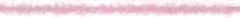

2014/0725Friあしゅりんは偉大だ
みなさまおはようございます(｡>ω<｡)
今日はアンダーライブ！全開でいきます。
書き終わるまでに7日間かかったブログです。笑
伝えたい思いとかいろんな出来事がたくさんあって、ズラーっと書いてたら
ブログじゃなくなったので、
思い切って全部消して
最初から書き直してます！なう！笑
遅くなってしまってごめんね。
そう！題名！みんな気になるでしょ！
あしゅりんは偉大なんだよ！
齋藤飛鳥さん、愛してる。
どうしてこうなったのかは、
あえての秘密にしておきます♡
みんなのあしゅしゅ！
でも、私だけのあしゅしゅ♡
アンダーライブのおいシャンの
Aメロは注目よ！

6月27日の横浜個別握手会！
1部から3部！
1部の髪型と洋服！
さしてるピン留めは未央奈からの
パリのお土産♡
塩アイスで色違いです！
前髪同じで髪の毛巻き！
洋服は妹のオーバーオールに
Tシャツ！
三部は、大人っぽく！
一つで結って、
紺色のワンピースに
ネックレスしました！
16日には、伊織と純奈と3人でディズニーにいって17日に私の家でお泊まりして伊織は18日も泊まって一緒にダンスの練習したんだ～！
ディズニーでは、テンションMAXになったりで純奈のチークでみんなのほっぺをハート型にチークいれたり、
アトラクションで予想以上にびしょびしょになったり、車を運転できる乗り物で私だけ真剣にハンドルきったり
とっても楽しかったです♡
またいこうね♪能條さん方といくディズニーも、まだ行けてないのではやくいきたーい！
そして、京都での全国握手会！
ミニライブがなく、皆さんにはがっかりさせてしまいごめんなさい。。。
少しでも楽しんでもらえるようにと
トークやカラオケをしたりと
会場もわいわいしてましたね♪
ペアはまりかさん♡
がうっちを食らうがおー！
可愛すぎて食べられませんが♡
いや、逆に可愛すぎるから食べちゃいたい♡
まりかさんの手にラクガキしてから
自分の手にもラクガキしました♡
まりかさんとの握手楽しかった♡
また機会があったら、その時はまりかさんの手にバージョンアップしたラクガキするぞ(灬ºωº灬)
まりかさんのファンの方ありがとうございました！
そして、21日に気づいたら片想いラストの個別握手会がありました！
はじめての4部でした！
1部はショートパンツにTシャツみたいなトップスに髪型がストレート！
2部がさくらんぼの絵柄のワンピースに
髪型がストレート！
3部がさくらんぼの絵柄のワンピースに
まきがみ！
5部が襟付きのトップスにミディ丈スカートに髪型は巻き髪のおんぷちゃんヘアでリボンつけました！
5部！このトップスあしゅさんと
おそろっち♡
そしてこの日は2部終わりに私の生誕祭がありました！
やるよーってちょっと風の噂で聞いてたけど本当にあるのかなー？って
当日も皆さん何も言わないから
なさそうだな～なんて思って
少し不安だったけど、
ちゃんと生誕祭を開いて下さいました♡
可愛く装飾して下さったレーンを
歩いて行く前から
照れて照れて大変でした。笑
生誕委員の方々がたくさんたくさん
私のためにしてくださり、
たくさんの方が集まってくれていました！
登場曲がロマンスのスタートだったのですが、ロマンスのスタートは私が初めて入った選抜の曲でもあって
もうひとつ理由があることをファンの方に教えてもらいました！
でも、その理由はなんだか照れくさいし大切な思いが込められているので
秘密にしておきます♡笑
2.3部の洋服！
未央奈と純奈が私のために手紙を読んでくれました！
その手紙はとても未央奈らしくて、
純奈らしくて、2人の思いは全部私まで届きました！
未央奈もブログで言ってるとおり
最近はコミュニケーションがとれてなくて、距離ができていました。
それは私も感じていて、でもその距離にはたくさんの理由があって、
未央奈もそれは感じていたんだなって
その時知ったよ。
二期生1人で選抜の中にいて
大変なこともあるだろうし寂しい思いをしてるだろうなって思っていたけど
私もアンダーライブや自分のことばかりで、未央奈にまで気をまわせてなかったの。ごめんね。。。
でも、やっぱりこの先付き合いは長いし、っていうか一生仲良しでいたいよ！
だから、もっと頼ってね！
だいすき！
純奈は、まさかのメモを切った1枚の紙だったけど、そんなところもすごく純奈らしくて、嬉しかったよ！
純奈は、私みたいで不器用だなって思う！笑
キツイ時でも、落ち込んだり泣いたりしたら皆が心配するからって
泣くの我慢したり平気なフリしたり！
だから、純奈ももっと頼って！
純奈より頼りない日奈子だけど、
日奈子に相談してもな～って思ったとして相談して♡笑
私は純奈を待ってるからね♡笑
大人っぽく見えて、頼りになって
私なんかよりしっかりしてるけど
私の方が一応お姉ちゃんだから♡笑。
ね？(｡・・｡)♡笑
だいすき！
生誕祭の話してるのに、
話がちょっとずれてしまいすみません。笑
よし、戻ります。笑
私から皆さんには、予想通りやっぱり上手く思いを伝えられなかったけど
本当に感謝の気持ちでいっぱいです。
今までの生きてきた人生の中で
1番幸せな誕生日になりました！
私ばかり皆さんに助けられて
幸せに、笑顔にしてもらっているばかりで何も返せていませんT^T
これから先、時間はかかってしまうかもしれませんが少しずつでも皆さんに返せていけるように、これからも頑張っていきます！
これからも、ずーっとずっと
よろしくお願いします！
皆さんのことが本当にだいすきです！
まひろさん、優里さん、
少し早いけどれなさん！
お誕生日おめでとうございます！
7月生まれの方の画像は、もう少し待っていて下さい。。。
それと、この日の5部終わりには
市來さんの卒業セレモニーがありました。
市來さんを近くで初めて見たのは
代々木でライブした時の楽屋の中！
第一印象は、綺麗で凛とした私とは正反対の性格の方なのかなと思っていました！
でも、いつの日からか市來さんにがおーって会うたびにされるようになって、
乃木坂showの楽屋で楽しみにしていたお弁当がなくなってしまった市來さんは、残念そうに悲しいお弁当の歌を歌っていて、え！市來さん！笑。って
それから、グーンと仲良しになりました♡
9枚目のアンダー曲のPV撮影の時や、ジャケット撮影の時で、
もっと仲良しになって市來さんのことが
だいすきになりました！
誰かにいたずらしたくなるところは、
私と同じで真面目な話もしたことは
あったけど、ほぼふざけてました♡笑
市來さんが私の誕生日の時にメールを送ってくれて、きいちゃんはあたしにとって2期生の中で1番仲良くなれて、話すのが楽しかった！って言ってもらえて
本当に嬉しかったです♡
今度遊ぶ約束もしたんだ～(｡>ω<｡)♪
だいすきです(｡>ω<｡)♡
市來さんのべぇーだよ！
乃木どこ見ました！笑
学業と活動の両立は私が想像できないくらい、大変な事だったと思います。
3年間本当にお疲れ様でした！
また、ブログ書きます٩(ˊᗜˋ*)و
2014/07/25 13:00


コメント(546)
明日最前で観るからね♪
きぃちゃん生誕祭よかった！
かなり近くでみて感動したよ！
年もひとつあがり大人に！
これからもがんばって！
そして誕生日おめでとう！
生誕祭うまくいってよかったなぁー
日奈子涙ぐんだ時は泣きそうになっちゃったよ(＞人＜;)
画像写っちゃってる
晒されたー(＞人＜;)ww
握手覚えてくれたかなぁー？♡
8月2日も行くからねん(*^◯^*)
応援してるね！
きぃちゃんも偉大だと思ふ
アンダーライブ
楽しんでね( ´ ▽ ` )ﾉ
きいちゃんこの前の握手会最高だった！！
頑張って！！✌️('ω'✌ )三✌('ω')✌三( ✌'ω')✌
ブログで名前読んでもらったれいぴよです！覚えててくれると嬉しいな♡
また2日行くからよろしくね〜
誕生日おめでとう‼︎
byケンニイ
久々の更新ありがとう！
アンダーライブ 前めっちゃよかったで！
俺は行かれへんけど、全力で頑張ってな！
最後にお誕生日おめでとう( ´ ▽ ` )ﾉ
では、またな( ´ ▽ ` )ﾉ
8/2また行くねー！
待っててね(｡>∀<｡)
アンダーライブがんばってねー！応援してます♪
あすかは偉大だぜ
髪の毛切った？
今日のアンダーライブ日奈子で飛びまくるぞー、
今日はアンダーライブいくよ！！
たのしみ～♪
れなりんとどこいくの？？
改めて誕生日おめでとう！
京都全握楽しかったよ！
改めて誕生日おめでとー！
握手会お疲れ様ー。
相変わらず可愛すぎて(っ'ヮ'c)
れなりんの卒業は寂しいけど、これからも応援するよ！
アンダーライブ、ファイト！
マジン⊿
きいちゃん♡
おやすみなさい。
みるくんでした。
ちゃんちゃん♪
これからも応援してます！！
なんだなんだ、
あしゅ偉大のルーツとロマスタのことが気になるっ
あしゅに聞いてみようかな。。
生誕おめでとう！
たかりょうでーすww覚えてるかな？
本物ですw俺の友達がたかりょうの名前でコメントしてくれてるみたいwww
今はアメリカにいます～
午後９時ですww明るいけどww
明日カナダに行ってホームステイ！
8/2行けないんだな～泣
全ツは行くよー♪
次の握手は9月だね！
またあの水白色シマシマユニフォーム着ていくからねえ！
あ、番号入れたんだよ！７番！
頑張ってね！！
byたかりょう
握手会お疲れでした！
ブログ更新ありがとーう
またコメントするね(｢*｀(ˇ‾ˇ) ´)｢ｶﾞｵ
U.L.いってらっしゃい(｢*｀(ˇ‾ˇ) ´)｢ｶﾞｵｶﾞｵ
熱中症には気を付けてなー
この前の握手会ほんとに楽しかったよ！！
やっぱすっごく可愛かった///がおー最高でした///
それにきぃちゃんがはなきまるの名前を覚えててくれててほんとにびっくり！！
これからもどんどん(長い)コメントしてくからよろしくね(笑)
楽しい時間をほんとありがとう！！
改めまして、誕生日おめでとう！！
学校の都合で生誕祭見れなかったけど、写真からきぃちゃんがみんなに愛されてるんだな〜って感じが伝わってきたよ(￣▽￣)素敵な1年にしてね！
こんど握手会行けるの9月なんだ…だからそれまではブログでコメントしかできないけど、はなきまるのこと忘れないでね！！(笑)
ばいっ
んで、誕生日おめでとう！
生誕祭行きたかったなー
幕張の個握は予定合わんくて、行けなかった(^_^;)
でもこないだの横浜の個握で直接祝えたから良かったわ（≧∇≦）
18歳の年も頑張ってね♪♪♪
夏忙しくて、FREE&EASYの握手会もう行けないけど、また次シングルで行くからねー(｡-_-｡)
大好き
一期生を超えられるようがんばって！
応援します！
がおー
きいちゃん可愛い♡
あしゅりんは偉大なのか（笑）
つるぽんだよ〜って初コメントです‼︎
ちょいちょいコメントしますので、宜しくお願いします（≧∇≦）
ｂｙつるぽん
どうも、スポーツマンに見えるような格好をしていたショウです!(^^)!
海の日がきいちゃんとの初めての握手だったな
たった一回だったけど、すげー楽しかったし何よりきいちゃん美人だったな！
その美形は大人になってもきっと役立つだろう
いつかまた行くんでその時はよろしく頼むよ( ^o^)ノ
そしてれなりんとの写真ありがとう
仲良かったんだねー
べーっとか懐かしいな
また遊んだ時はブログで報告してね
きーちゃんのかわいさにいつも癒されてます笑
きーちゃんの笑顔大好きだよー！
つかっちだよ
がおっち！
ブログ更新ありがとうー！
生誕祭よかったねー！
当日行けなくてほんと残念です(T_T)
またブログ更新待ってます！
いっくん
誕生日おめでとう！！3人の関係ほんと羨ましいなって思うから、これからも仲よくね！！
アンダーライブ頑張れ
コメントする